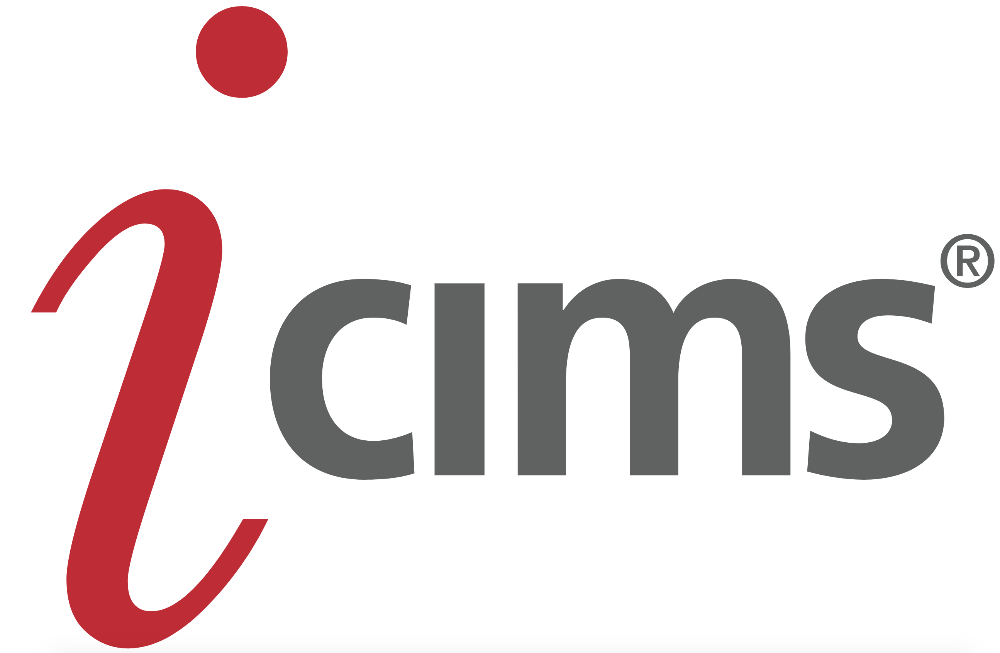

Driven by a passion to help companies win the war for talent, iCIMS is proud to
offer leading software solutions and tools to unify all aspects of talent acquisition.
With iCIMS, companies can manage their entire talent acquisition lifecycle within
a single SaaS application. Our focus on user-friendly technology and an exceptional
customer experience has made us the largest standalone provider in the industry.
iCIMS offers the only true enterprise end-to-end talent acquisition platform.
(From iCIMS Website)
Greenhouse provides a recruiting software as a service. Greenhouse sells annual
licenses to companies, allowing them to use Greenhouse's software. Greenhouse collects
into one dashboard the job seekers' applications from different routes like employment
websites and referrals. Greenhouse is an open platform that uses an application
programming interface (API) to facilitate the aggregation. To determine which job
posts are more effective, it allows companies to do A/B testing. Greenhouse lets
companies create a uniform interview procedure so candidates can be judged based on
the same rubric. It aggregates a candidate's resumes and interview feedback for
comparison with the job opening's specifications. It allows companies to
compare candidates against each other and to compare their hiring metrics
against the industry standards. (From Wikipedia)
JazzHR is a powerful, user-friendly and affordable ATS & recruiting software that enables
today's greatest people to build tomorrow's greatest companies. JazzHR replaces
antiquated hiring processes like email and spreadsheets with an intuitive ATS that
helps recruiters & hiring managers build a scalable & effective recruiting process
that consistently results in great hires. JazzHR is also the creator of HR's first
integrated crowd-sourcing, big-data & predictive analytics initiative.
(From
https://www.capterra.com/p/87750/JazzHR/)
Workable provides a flexible, intuitive interface to track and manage candidates. Visual
hiring pipelines give live status updates for every job with rich candidate profiles.
Use the candidate database and talent CRM to nurture and progress prospects over time.
Create a structured interview process with interview kits and generate actionable
feedback with customized scorecards. Trackable communication ensures smooth
collaboration with your team. Available on desktop or mobile.
(From
https://www.capterra.com/applicant-tracking-software/ )
Crelate is a modern, fast, full-featured applicant tracking and talent relationship
management solution built specifically for retained search agencies, executive search
firms and professional corporate recruiters. We offer the features busy recruiters want
such as Outlook client integration, email tracking, flexible workflows, candidate
portal, mobile access, client submittals and more; as well as the onboarding,
training and service they would expect and we do all at a reasonable price.
(From
https://www.capterra.com/applicant-tracking-software/ )